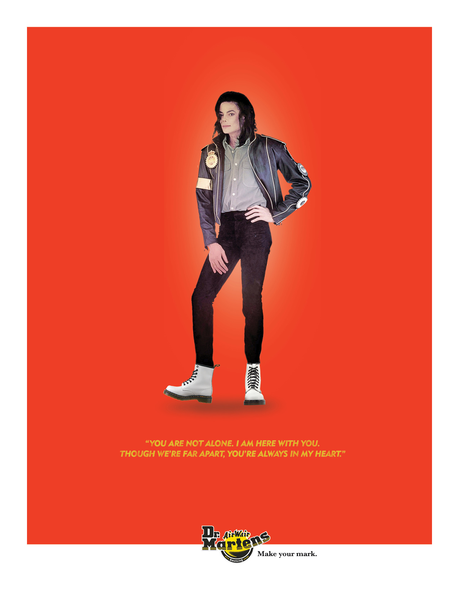

Print

Web
Dr. Martens
Dr. Martens is more than just a footwear brand; it's a brand that is synonymous with defining the human spirit. It is a brand that has been strongly tethered to music and the people who wear them. Targeting both men and Women aged 25-40 who remember or identify strongly with music icons of the past, the campaign illustrate the relationship between music and the brand's influence on music. And, even after you've made your mark on earth, your spirit continues to live on.